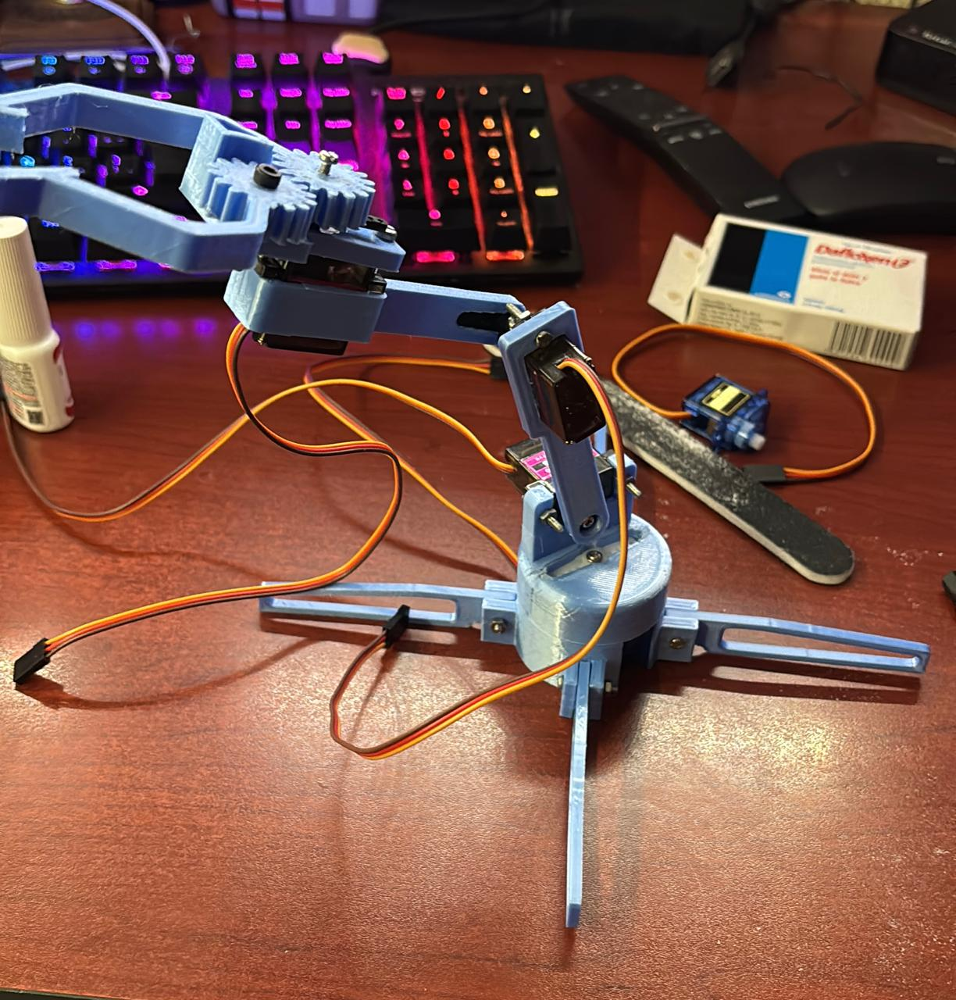

Un brazo robótico es un dispositivo mecánico diseñado para replicar los movimientos del brazo humano, ofreciendo una solución versátil y precisa para una amplia variedad de aplicaciones. Estos dispositivos son fundamentales en industrias como la manufactura, la medicina, la investigación científica e incluso en el ámbito recreativo. Su diseño y funcionalidad se basan en una estructura articulada que incorpora múltiples grados de libertad (DOF, por sus siglas en inglés), lo que les permite realizar tareas específicas con un alto nivel de precisión, flexibilidad y repetibilidad.
- Materiales -
--Arduino
--jumpers
--4 servomotores
--4 velocimetros
--modelo de brazo
Simulación
Siguiendo el diseño inicial del mapa creado en Tinkercad, logramos desarrollar y poner en funcionamiento nuestro brazo robótico, cumpliendo con los objetivos planteados en el proyecto. Este proceso nos permitió transformar un esquema virtual en un dispositivo físico operativo, demostrando la efectividad de la herramienta como plataforma para la planificación y simulación de sistemas electrónicos y mecánicos.
Una vez construido, el brazo robótico mostró un desempeño eficiente, realizando movimientos precisos y replicando con éxito las tareas programadas. Este resultado fue posible gracias a la integración de los elementos simulados en Tinkercad y su correspondiente traducción al montaje real. Durante el desarrollo, ajustamos parámetros como la velocidad y el rango de movimiento, asegurando un control óptimo de cada grado de libertad del brazo.
El uso de Tinkercad no solo facilitó la etapa de diseño, sino que también fue clave para probar la funcionalidad del sistema en un entorno virtual antes de la implementación física. Esto permitió realizar ajustes iterativos en los circuitos y el código de control, maximizando la eficiencia del proyecto final.
- Resultados -
El resultado obtenido fue satisfactorio, aunque podría considerarse aceptable en términos de resistencia mecánica, ya que los servomotores utilizados no ofrecieron toda la fuerza requerida debido a las limitaciones del modelo. Sin embargo, a pesar de este desafío, el brazo robótico logró cumplir con su objetivo principal: pasar la pelota con éxito.
Este logro demuestra la funcionalidad del diseño y la programación, aunque también destaca la importancia de seleccionar componentes adecuados para aplicaciones específicas. En futuros desarrollos, considerar servomotores con mayor torque podría mejorar el desempeño general y ampliar las capacidades del brazo robótico. Aun así, el éxito alcanzado valida el enfoque utilizado y la adaptabilidad del sistema frente a restricciones técnicas.

- Conclusiones -
Un brazo robótico es una herramienta altamente versátil y fundamental en una amplia variedad de industrias, gracias a su capacidad para realizar tareas complejas con precisión y eficiencia. Su diseño y fabricación integran tres disciplinas clave: mecánica, electrónica e informática, trabajando en conjunto para crear un sistema robusto, adaptable y eficiente.
La incorporación de materiales ligeros pero resistentes, como aleaciones metálicas y polímeros avanzados, otorga a los brazos robóticos durabilidad y facilidad de movimiento, sin comprometer su capacidad de carga. Esto los hace ideales para aplicaciones en entornos industriales, médicos, agrícolas y de investigación, donde la precisión y la fiabilidad son esenciales.
Además, el uso de tecnologías avanzadas, como motores de alta precisión, sensores táctiles y de fuerza, junto con algoritmos de control sofisticados, permite a los brazos robóticos adaptarse dinámicamente a diferentes condiciones de trabajo. Estas características no solo mejoran la productividad al automatizar tareas repetitivas o peligrosas, sino que también reducen significativamente los riesgos asociados al trabajo en entornos complejos o potencialmente peligrosos.
En sectores como la manufactura, los brazos robóticos han revolucionado líneas de producción al realizar ensamblajes, soldaduras y manipulaciones con una velocidad y precisión que superan las capacidades humanas. En la medicina, son una herramienta clave para procedimientos quirúrgicos delicados y terapias de rehabilitación. En la investigación científica, facilitan experimentos complejos al minimizar la intervención humana en procesos sensibles.
En definitiva, los brazos robóticos representan un avance crucial en la integración de tecnología y productividad, brindando soluciones innovadoras y eficientes que continúan redefiniendo los estándares en diversos campos. Su evolución constante asegura que seguirán siendo una pieza central en el progreso tecnológico y la automatización del futuro.